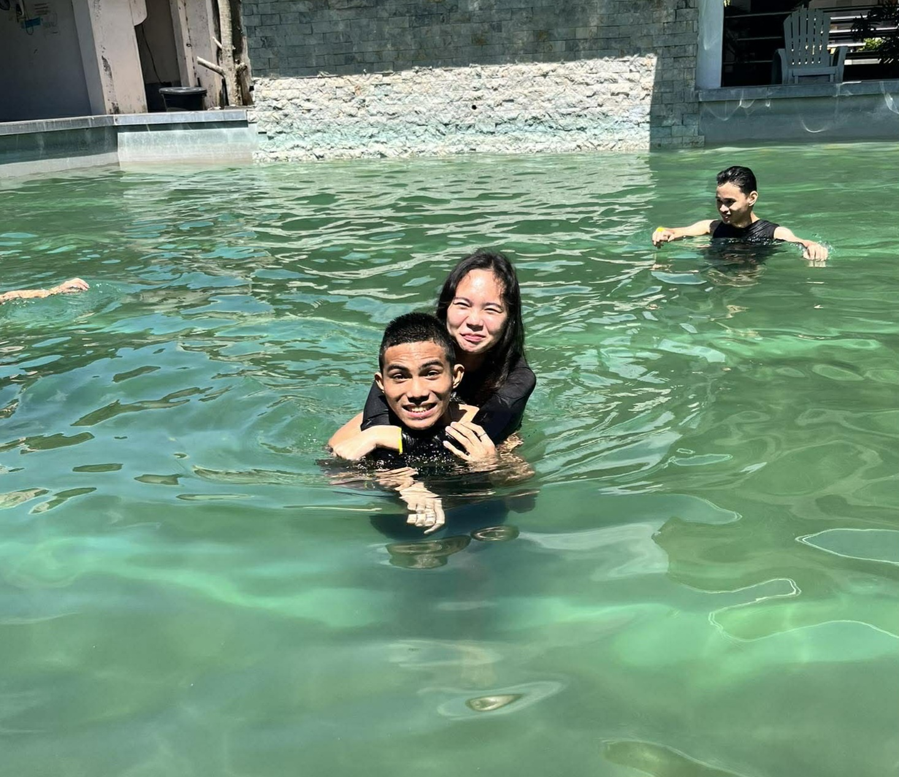
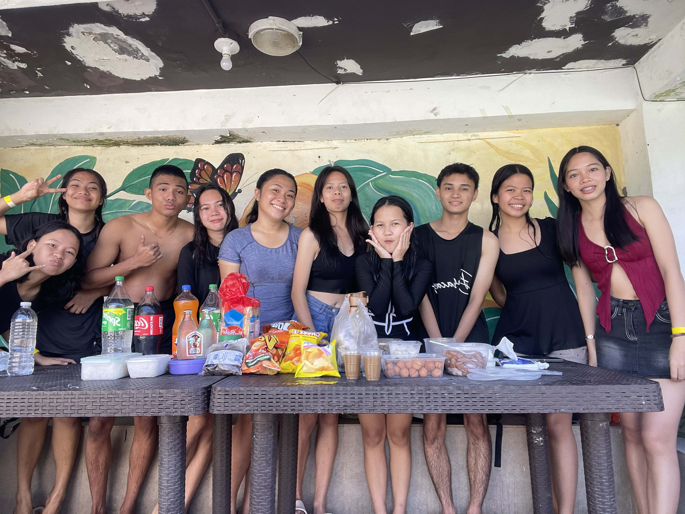

Today we went out swimming with Elaine and friends! Woke up around 7, packed my stuff, and headed out for a fun day at the resort.
Morning Prep & LCC Run
Woke up bright and early at 7am to get ready. I was in charge of buying the booze (gin), so I made a quick stop at LCC to grab what we needed. After getting everything, I commuted via jeep to Daraga — that's where we all agreed to meet up so we could ride together to the resort.
Off to Cagsawa
Everyone gathered at the meeting point, and we all piled into a jeep heading to Cagsawa, Daraga. The ride was fun — everyone was hyped, talking about how excited we were to swim and just hang out. The resort was nice, perfect for a day out with friends.
Lunch Time
We arrived around 11am and immediately dug into lunch. After eating, we waited a bit to let the food digest before hitting the pool. Good food, good company — off to a great start.
Pool Time & Teaching Elaine
Finally, it was time to swim! Everyone jumped into the pool, but Elaine was a bit hesitant — she's not super comfortable around water. But she managed to pull herself together and get in. I taught her some basic stuff about swimming, how not to panic, and just staying calm in the water. She was trying her best and honestly? I was proud of her for facing that fear.

Mishli to the Rescue
After a while, our friend Mishli joined in. She takes swimming lessons, so she was a huge help in teaching Elaine. Between the two of us, Elaine started getting more and more confident. Seeing her progress from hesitant to actually enjoying the water was really satisfying.
After their sessions, Elaine had newfound confidence. Honestly, I'm so proud of her. She faced something that made her uncomfortable and came out the other side stronger.
Fun, Laughs, and Memories
The rest of the day was just pure fun. We were all swimming, eating, laughing, doing silly videos for memories, and of course, drinking. Just soaking in the moment with friends. Those are the days you'll look back on and smile.

Time to Go
But like all good things, it had to end. It was almost 4pm, so we packed up and headed home. I was so tired — the good kind of tired you get after a day well spent. I quickly fell asleep as soon as I got home.
Woke up later in the evening and immediately started updating this very blog. Had to document this day. Definitely one for the books.
10/10, more biglaang ganaps lol.
Already looking forward to the next one.
— CJ